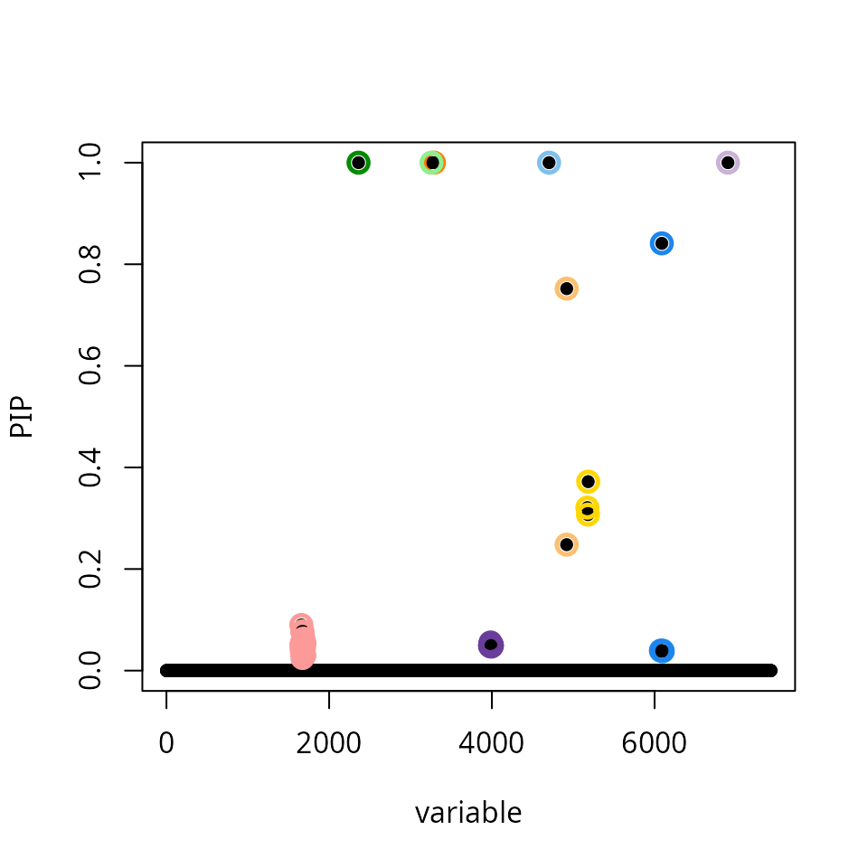
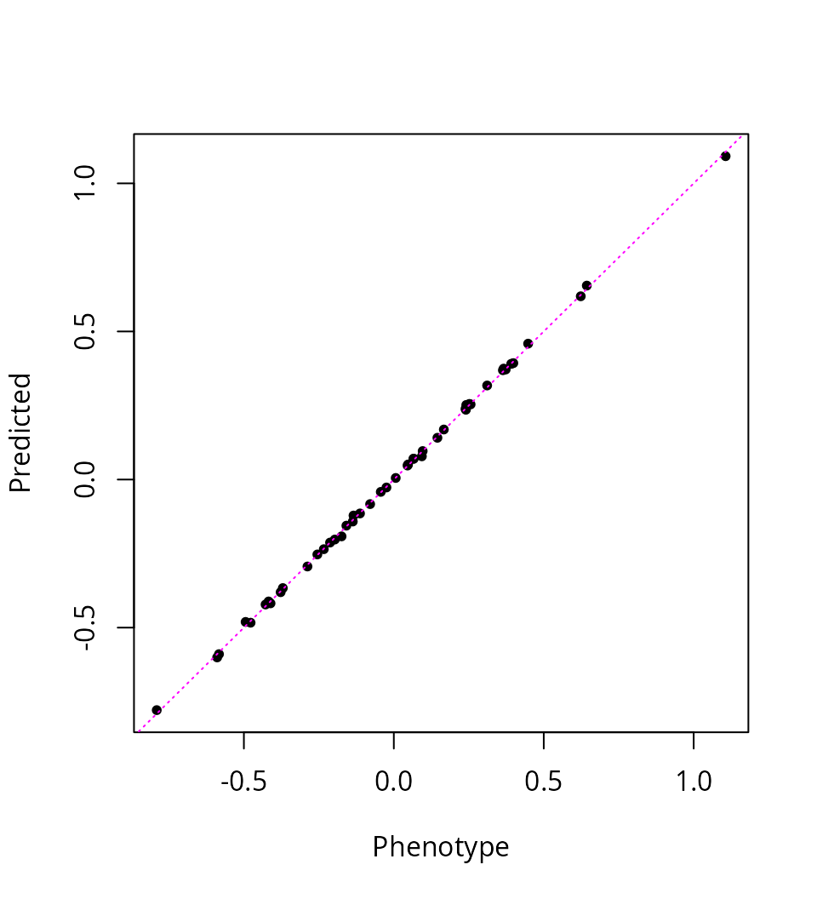
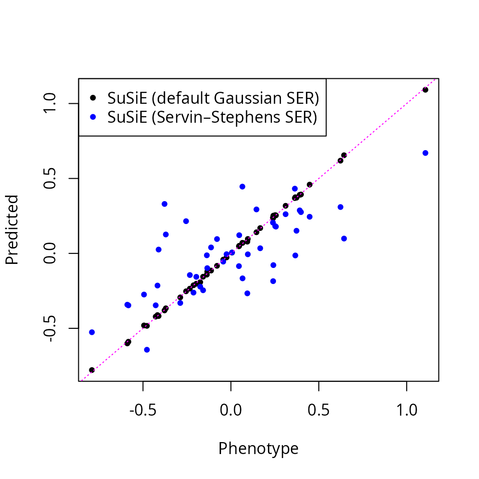

Accounting for uncertainty in residual variances for small sample studies
William R.P. Denault
2025-09-24
Source:vignettes/small_sample.Rmd
small_sample.RmdThis is vignette is a modified example based on Figure 1 panel B-C-D in Denault et al paper.
To reproduce, install the latest development version of susieR (optional):
# install.packages("remotes")
remotes::install_github("stephenslab/susieR")Data
We analyze a simulated eQTL dataset by modifying normalized gene expression and normalized SNP genotypes in Denault et al. The goal is to fine-map causal variants for expression (eQTLs). In this example the ground truth is unknown.
Baseline SuSiE fit
The original SuSiE procedure displays signs of misscalibration: the result is highly suspicious as we find 10 credible sets in a data set containing only 47 samples.
res_susie <- susie(X,y,L = 10,verbose = FALSE)
res_susie$sets$cs
# $L2
# [1] 6902
#
# $L3
# [1] 3258
#
# $L5
# [1] 4703
#
# $L7
# [1] 3288
#
# $L9
# [1] 2361
#
# $L1
# [1] 4919 4920
#
# $L6
# [1] 5174 5181 5184
#
# $L8
# [1] 3978 3979 3980 3981 3984 3985 3987 3988 3989 3990 3991 3992 3993 3994 3996
# [16] 3997 3998 3999 4000
#
# $L4
# [1] 1658 1660 1661 1665 1667 1668 1670 1672 1673 1674 1675 1678 1679 1680 1681
# [16] 1682 1683 1691 1695 1697
#
# $L10
# [1] 6078 6089 6096 6100
susie_plot(res_susie,y = "PIP")
Another clue is that the fine-mapped variants explain >99% of the variation in gene expression, which suggests overfitting.
ypred <- predict(res_susie, X)
pve <- 1 - drop(res_susie$sigma2 / var(y))
round(100 * pve, 3)
# [1] 99.953
plot(y, ypred, pch = 20,
xlab = "Phenotype",
ylab = "Predicted")
abline(0, 1, col = "magenta", lty = "dotted")
SuSiE with Servin–Stephens SER (small = TRUE)
Setting small = TRUE switches SuSiE to a variant of
single-effect regression (SER) that properly accounts for uncertainty in
the residual, i.e. Servin-Stephens single effect regression (Servin and Stephens
2007 PLOS Genetics).
res_susie_small <- susie(X,y,L = 10,small = TRUE,verbose = TRUE)
# [1] "max change in alpha: 0.165158655049151"
# [1] "max change in alpha: 0.0739855979961968"
# [1] "max change in alpha: 0.00606943232237271"
# [1] "max change in alpha: 0.00165047336131911"
# [1] "max change in alpha: 0.000781249725921514"
# [1] "max change in alpha: 0.000354188980587232"
# [1] "max change in alpha: 0.000275048006712034"
# [1] "max change in alpha: 0.000180419697345139"
# [1] "max change in alpha: 0.000104593556337134"
# [1] "max change in alpha: 6.5372392206102e-05"
res_susie_small$sets$cs
# $L1
# [1] 4919 4920The results are more plausible as this version of SuSiE only a single CS.
susie_plot(res_susie_small,y = "PIP")The lead SNP in this CS explains about 51% of the variance in expression, which is again more plausible
Compare predictions: overfit (default) vs Servin–Stephens SER
plot(y, ypred, pch = 20,
xlab = "Phenotype",
ylab = "Predicted")
points(y, pred_small, pch = 20, col = "blue")
abline(0, 1, col = "magenta", lty = "dotted")
legend("topleft", pch = c(20, 20), col = c("black", "blue"),
legend = c("SuSiE (default Gaussian SER)",
"SuSiE (Servin–Stephens SER)") )
References
Servin, B. & Stephens, M. (2007). Imputation-based analysis of association studies: Candidate regions and quantitative traits. PLOS Genetics, 3(7): e114.
Denault et al. (2025) Accounting for uncertainty in residual variances improves calibration for fine-mapping with small sample sizes, bioRxiv